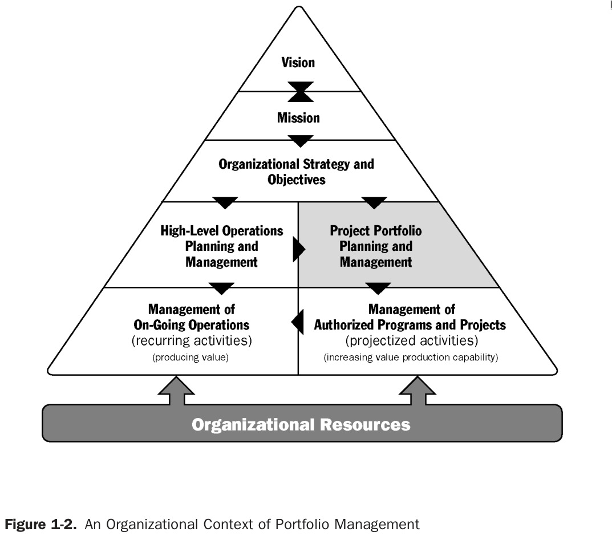
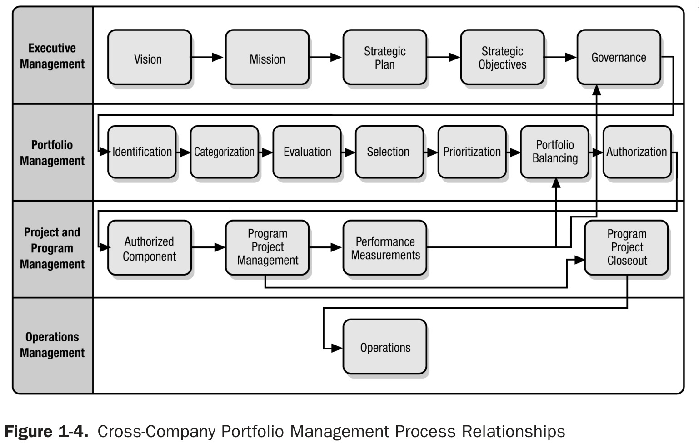
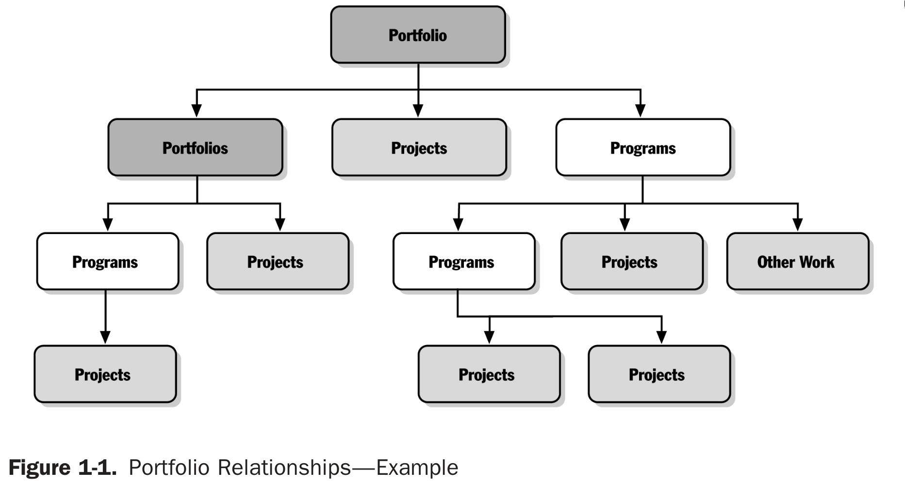

Introducction#
Project management consists of managing resources in the best possible way to chieve the company’s objectives efficiently.
Orgatization#
Organizations are guided by theirs vision and mission, so they must manage their resources efficiently to fulfil them. This gap (the “manage”) between vision and mission and resources is where project management comes in.

As the figure shows, an entire organizatinal strategy is planned. Then this strategy leads to the management of portfolios, programs and projects.

Attitude towards change#
The organizatinal strategy and project planning seems to be static—planned for a whole year, and then it is nerver touched again—but is not. The world is constantly changing and organizations that want to survive must do so as well.
Project management methodologies#
For project management it is necessary to define an appropriate methodology. There are some of them:
Portfolios, programs and projects#
See glossary.
The idea is to group the resources of related projects, so that resources are better utilized and easier to organize.

As the figure shows there is a hierarchy: Portfolios > Programs > Project.
Strategic considerations for initiating projects#
There are many reasons for an organization to initiate projects. There are some examples:
- Market Demand: An automobile manufacturing company authorizes a project that will build more efficient cars.
- Business needs/opportunities: A training company creates a new course to increase revenue.
- Organizational Needs: Due to high costs, a company could combine its administrative staffing functions with the order taking processes to reduce costs.
- Customer requests: An electric utility authorizes a project to serve a new industrial park.
- Technology Advances: A company authorizing a new project to develop a faster and cheaper laptop.
- Legal requirements: A chemical company authorizes a project to establish guidelines for handling a new toxic material.
- Ecological impact: A company authorizes a project to reduce its environmental impact.
- Social needs: An NGO authorizes a project in a developing country to provide drinking water systems and health education to prevent cholera.
Software projects#
Where is the software in project management?
IT department#
Organizations are usually organized in departments. Software is usually in the IT department.
The IT department:
- Offers internal and external services.
- Supports workflows.
- Is essential to the business.